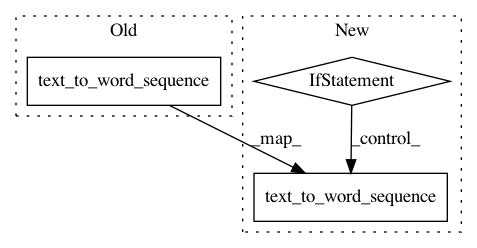

173a1a545954bae38e40f4fb0bde228765a9b059,keras/preprocessing/text.py,Tokenizer,texts_to_sequences_generator,#Tokenizer#Any#,252
Before Change
num_words = self.num_words
for text in texts:
seq = text if self.char_level else text_to_word_sequence(text,
self.filters,
self.lower,
self.split)
vect = []
for w in seq:
i = self.word_index.get(w)
if i is not None:
After Change
num_words = self.num_words
for text in texts:
if self.char_level or isinstance(text, list):
seq = text
else:
seq = text_to_word_sequence(text,
self.filters,
self.lower,
self.split)
vect = []
for w in seq:
i = self.word_index.get(w)
if i is not None:
In pattern: SUPERPATTERN
Frequency: 4
Non-data size: 3
Instances
Project Name: keras-team/keras
Commit Name: 173a1a545954bae38e40f4fb0bde228765a9b059
Time: 2018-02-17
Author: mats@plysjbyen.net
File Name: keras/preprocessing/text.py
Class Name: Tokenizer
Method Name: texts_to_sequences_generator
Project Name: keras-team/keras
Commit Name: 05dcfe15fe94768cd31114486747edfd6381d09c
Time: 2016-01-20
Author: wbin00@gmail.com
File Name: keras/preprocessing/text.py
Class Name: Tokenizer
Method Name: fit_on_texts
Project Name: keras-team/keras
Commit Name: 173a1a545954bae38e40f4fb0bde228765a9b059
Time: 2018-02-17
Author: mats@plysjbyen.net
File Name: keras/preprocessing/text.py
Class Name: Tokenizer
Method Name: fit_on_texts
Project Name: keras-team/keras
Commit Name: 05dcfe15fe94768cd31114486747edfd6381d09c
Time: 2016-01-20
Author: wbin00@gmail.com
File Name: keras/preprocessing/text.py
Class Name: Tokenizer
Method Name: texts_to_sequences_generator